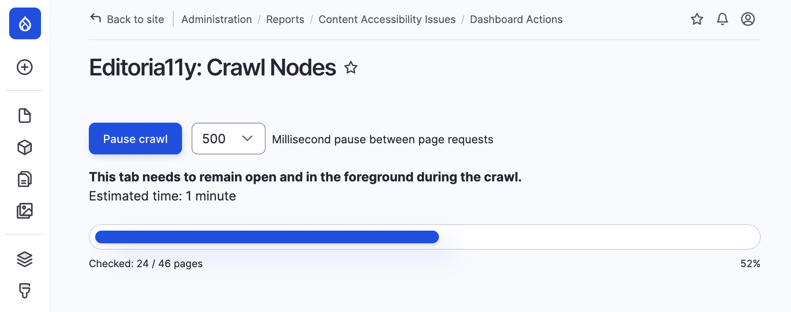
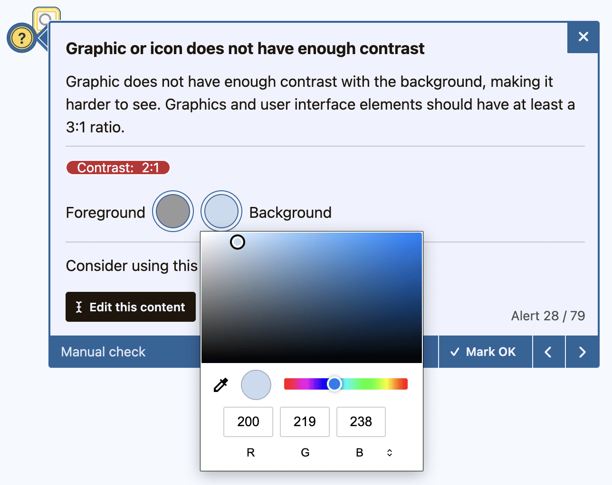

Funzionalità
I test principali di Editoria11y rilevano più di 50 problemi comuni di accessibilità nei contenuti: scelte che compromettono la leggibilità, errori che rendono meno efficaci i lettori di schermo e imprecisioni che penalizzano la SEO.
I componenti aggiuntivi offrono circa 40 test supplementari per sviluppatori e designer, test personalizzati e vari strumenti di controllo qualità a livello di sito.
I test sui contenuti si concentrano sui problemi che emergono dopo che i siti vengono consegnati agli autori. Prima del lancio è necessario testare i siti con strumenti di verifica manuali, tastiere e lettori di schermo; tuttavia anche il sito più accessibile tende a deteriorarsi nel tempo, man mano che le modifiche introducono nuovi problemi.
Ciò che distingue Editoria11y dagli altri strumenti di accessibilità è che i suoi test vengono eseguiti in tempo reale, nel browser, mentre gli autori modificano e visualizzano in anteprima il loro lavoro. Gli autori reagiscono più facilmente a un feedback immediato e contestuale, notano gli avvisi e apportano correzioni, invece di dover ricordare di visitare una dashboard o avviare un controllo manuale.
L'esperienza dell'autore

Gli autori vedono la barra degli strumenti di Editoria11y mentre modificano i contenuti. Quando vengono rilevati problemi, la barra diventa gialla o rossa e mostra il numero di segnalazioni. Facendo clic sul contatore si scorre fino al primo avviso e si apre il relativo tooltip.

I suggerimenti appaiono in linea con il contenuto e comprendono una descrizione in linguaggio semplice dell'errore, indicazioni per correggerlo e note sul perché il problema è rilevante.

La barra degli strumenti include funzioni aggiuntive per i controlli manuali, tra cui visualizzatori della struttura dei titoli, del testo alternativo e un punteggio di leggibilità.
Controlli per gli amministratori del sito
Ogni aspetto visibile dello strumento di verifica può essere personalizzato. Parametri ed eventi consentono di rimuovere test, riscrivere i suggerimenti, inserire test personalizzati e impostare temi grafici su misura.
I plugin per Drupal e WordPress aggiungono ulteriori funzionalità, come la gestione sincronizzata delle segnalazioni ignorate, dashboard a livello di sito ed esportazione di report in CSV.

Test
I test di Editoria11y mirano a migliorare l'esperienza del Web per tutti gli utenti, misurata in termini umani e non solo in base agli standard tecnici. Alcuni test chiave sono pensati per aiutare a conseguire le Web Content Accessibility Guidelines (WCAG 2.2 AA), altri sono influenzati dal lavoro del Cognitive and Learning Disabilities Accessibility Task Force, nonché dalle buone pratiche generali di usabilità e design.
I singoli test possono essere disattivati dagli amministratori del sito.
Testo alternativo delle immagini
- Immagine priva dell'attributo alt
- Il testo alternativo è un nome di file
- Il testo alternativo è un segnaposto ("TBD")
- Il testo alternativo contiene simboli non pronunciabili
- Il testo alternativo contiene parole ridondanti ("immagine di…")
- Il testo alternativo è troppo lungo
- L'immagine decorativa potrebbe avere valore informativo
- Immagine del carosello contrassegnata come decorativa
- Immagine con didascalia priva di testo alternativo
- Il testo alternativo duplica la didascalia
Immagini collegate
- L'immagine collegata è priva di testo alternativo
- Il testo alternativo dell'immagine collegata è un URL o un nome di file
- Il testo alternativo dell'immagine collegata è un segnaposto
- Il testo alternativo dell'immagine collegata contiene simboli non pronunciabili
- Il testo alternativo dell'immagine collegata descrive l'immagine, non il collegamento
- Il testo alternativo dell'immagine collegata contiene parole ridondanti
- Il testo alternativo dell'immagine collegata è troppo lungo
- Un'immagine in un collegamento con testo non ha l'attributo alt
Media incorporati
- Il video richiede sottotitoli
- L'audio richiede una trascrizione
- La visualizzazione dati richiede un'alternativa accessibile
- Il frame è privo di titolo
- Il frame è escluso dalla navigazione da tastiera
- Il contenuto del frame richiede una verifica manuale dell'accessibilità
- Il documento collegato potrebbe non essere accessibile ai lettori di schermo
- Il PDF è privo di un'alternativa accessibile
- Componenti di layout interattivi nidificati
Collegamenti significativi
- Collegamento vuoto
- Il testo del collegamento è un URL
- Il testo del collegamento è solo un numero DOI
- Il testo del collegamento dice "clicca qui"
- Il testo del collegamento contiene solo parole generiche ("leggi di più")
- Collegamento diversi condividono lo stesso testo
- Icona o immagine collegata priva di alternativa testuale
- Il collegamento apre una nuova scheda senza avviso
- Il collegamento punta a un file senza avviso
- Il testo del collegamento contiene solo simboli o emoji
- Testo del collegamento significativo nascosto agli utenti vedenti
- Tooltip del collegamento ridondante
- Collegamento ad ancora interna non funzionante
- Attributo ID duplicato
- Il collegamento potrebbe puntare a un ambiente di sviluppo
Titoli
- La pagina è priva di un Titolo 1
- Il primo titolo è un sottotitolo
- Il titolo salta un livello
- Il titolo è vuoto
- L'immagine usata come titolo richiede un testo alternativo
- Il titolo è molto lungo
- Un paragrafo in grassetto potrebbe essere un titolo
- Una citazione breve potrebbe essere un titolo
Leggibilità del testo
- Uso eccessivo di testo in maiuscolo
- Ampio blocco di testo in grassetto o corsivo
- Il testo è troppo piccolo
- Testo non collegato sottolineato
- Testo giustificato
- Pedice o apice usato impropriamente come formattazione
- Elenco finto realizzato con caratteri o simboli
- Elemento di elenco al di fuori di un elenco
Contrasto dei colori
- Il testo ha un contrasto insufficiente
- Il contrasto del testo richiede un controllo manuale
- L'icona o il grafico ha un contrasto insufficiente
- Il contrasto dell'icona o del grafico richiede un controllo manuale
- Il testo del campo di inserimento ha un contrasto insufficiente
- Il testo segnaposto ha un contrasto insufficiente
Tabelle
- La tabella è priva di una riga o colonna di intestazione
- La cella di intestazione della tabella è vuota
- Un titolo di contenuto è usato all'interno di una tabella
Moduli ed elementi interattivi
- Il pulsante è privo di etichetta accessibile
- Il pulsante ha un'etichetta ARIA non valida
- L'etichetta del pulsante include la parola "pulsante"
- L'etichetta visibile non corrisponde al nome accessibile
- Il campo di input non ha un'etichetta associata
- Il campo di input usa solo un'etichetta invisibile
- Il campo di input usa solo un segnaposto come etichetta
- Il pulsante di reset potrebbe causare la perdita accidentale di dati
- Elemento nascosto ai lettori di schermo ma ancora raggiungibile con la tastiera
- Un tabindex positivo interrompe l'ordine di lettura e navigazione
Metadati della pagina
- Titolo della pagina mancante
- Lingua della pagina non dichiarata
- Il viewport impedisce il ridimensionamento del testo
- La pagina si aggiorna automaticamente
Funzionalità CSA
Editoria11y promuove l'accessibilità in modo unico. I suoi strumenti sono altamente efficaci nell'aiutare autori non tecnici a preparare contenuti che possano essere fruiti equamente da utenti Web con disabilità. Consideriamo questo un bene comune, quindi Editoria11y sarà sempre gratuito da usare.
Editoria11y non è però gratuito da sviluppare o supportare.
Il CSA colma questa lacuna: i membri del progetto finanziano lo sviluppo della libreria Editoria11y, dei suoi plugin CMS e della suite CSA: un insieme in rapida crescita di strumenti open source per il controllo qualità che offrono funzionalità simili ai prodotti commerciali, a un costo molto inferiore. La suite CSA per Drupal è attualmente gratuita in beta e arriverà per WordPress nel terzo trimestre del 2026.

Test e strumenti
- Test per sviluppatori, leggibilità e contrasto.
- Configurazione separata per ruolo, per sviluppatori e creatori di contenuti.
- Strumenti per la creazione di test personalizzati.
- Esclusioni a livello di sito con un clic
- Strumenti di manutenzione della dashboard e crawler

Vantaggi per la comunità
- Supporto prioritario.
- Influenza ponderata sulla roadmap del progetto.
- Accesso automatico alle nuove funzionalità in roadmap.
- Assistenza diretta alla configurazione (a seconda del livello).
- Riconoscimento pubblico come sostenitore (a seconda del livello/su richiesta; si applicano i termini).
Licenza a contributo libero
Al termine della fase Beta, la suite CSA sarà resa disponibile con un modello a contributo libero. Il nucleo di Editoria11y, sia la libreria che i plugin, rimarrà gratuito.
Progetti sponsorizzati dal CSA
Attivi
T2 2026: Lancio della comunità CSA di Editoria11y
Lavori ancora da completare:
- Creare un ente fiscale per gestire abbonamenti e sponsorizzazioni.
- Configurare un sistema di licenze.
T2 2026: Strumento per la creazione di regole personalizzate
- Completato per Drupal.
- Da fare: portare lo strumento su WordPress.
T3 2026: Porting della libreria 3.x su WordPress
- Creare il sottomodulo CSA con le funzionalità supportate dalla comunità
- Creare strumenti di manutenzione della dashboard per eliminare risultati obsoleti e ripetere la scansione dei contenuti esistenti.
- Consentire di contrassegnare determinati test come OK a livello di sito, non solo su una singola pagina.
- Consentire la configurazione separata, con impostazioni e test distinti per sviluppatori ed editor di contenuti.
Completati di recente
T1 2026: Riscrittura della libreria 3.x
- Unificazione dei set di regole di Editoria11y e Sa11y. Dal momento del fork, Sa11y ha sviluppato circa 50 test aggiuntivi e adottato gli strumenti ESM, mentre Editoria11y ha introdotto miglioramenti delle prestazioni e aggiunto parametri per abilitare il controllo in tempo reale. Sa11y 4.2.2 e Editoria11y 3.0.0 daranno inizio al nostro futuro condiviso.
- Aggiunta del supporto alla "configurazione separata" per consentire set di regole distinti per sviluppatori e creatori di contenuti.
- Aggiunta di traduzioni automatiche in cinese, danese, olandese, tedesco, greco, ungherese, italiano, giapponese, norvegese bokmål, polacco, portoghese (Brasile), portoghese (Portogallo), spagnolo, svedese e ucraino come modelli per la revisione umana.
- Stato attuale: il lavoro di programmazione è terminato; il rilascio avverrà dopo l'aggiornamento della documentazione e delle demo.
T1 2026: Riscrittura del modulo Drupal 3.x
- Espansione della dashboard con strumenti di reportistica e filtraggio più robusti.
- Aggiunta di traduzioni automatiche in cinese, danese, olandese, tedesco, greco, ungherese, italiano, giapponese, norvegese bokmål, polacco, portoghese (Brasile), portoghese (Portogallo), spagnolo, svedese e ucraino come modelli per la revisione umana.
- Rendere personalizzabili le funzioni di esportazione CSV
- Creare il sottomodulo CSA con le funzionalità supportate dalla comunità
- Creare strumenti di manutenzione della dashboard per eliminare risultati obsoleti e ripetere la scansione dei contenuti esistenti.
- Consentire di contrassegnare determinati test come OK a livello di sito, non solo su una singola pagina.
- Consentire la configurazione separata, con impostazioni e test distinti per sviluppatori ed editor di contenuti.
In discussione
Discuti e vota queste idee nei forum della libreria Editoria11y.
Le idee sono contrassegnate con stime di difficoltà e priorità basate sui dibattiti in corso nella comunità.
- Dashboard di monitoraggio multi-sito
- Rilevamento di link non funzionanti
- Scansione di PDF
- Scheda con la posizione del codice nel tooltip
- Esportazione del report della pagina dal tooltip
- Parole segnalate
- Strumenti CLI per sviluppatori
- Bookmarklet/plugin per browser
- Validazione delle regole ACT
- Espansione della validazione nome/ruolo/valore